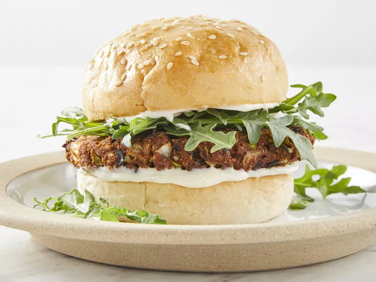

New Recipe - Homemade Black Bean Veggie Burger
What is Homemade Black Bean Veggie Burger?
Homemade black bean veggie burgers are a delicious and nutritious alternative to traditional meat burgers. They're not only packed with flavor but also offer a good dose of protein and fiber
Ingredients
- cooking spray
- 1 (16 ounce) can black beans, drained and rinsed
- ½ green bell pepper, cut into 2 inch pieces
- ½ onion, cut into wedges
- 3 cloves garlic, peeled
- 1 egg
- 1 tablespoon chili powder
- 1 tablespoon cumin
- 1 teaspoon Thai chili sauce or hot sauce
- ½ cup bread crumbs
Steps to prepare
- Preheat an outdoor grill for high heat. Lightly oil a sheet of aluminum foil with cooking spray.
- Mash black beans in a medium bowl with a fork until thick and pasty.
- Finely chop bell pepper, onion, and garlic in a food processor. Stir chopped vegetables into mashed beans.
- Stir together egg, chili powder, cumin, and chili sauce in a small bowl. Add to the mashed beans and stir to combine. Mix in bread crumbs until the mixture is sticky and holds together.
- Divide the mixture into four patties and place on the prepared foil.
- Grill on the preheated grill for about 8 minutes on each side.
- Serve hot and enjoy!